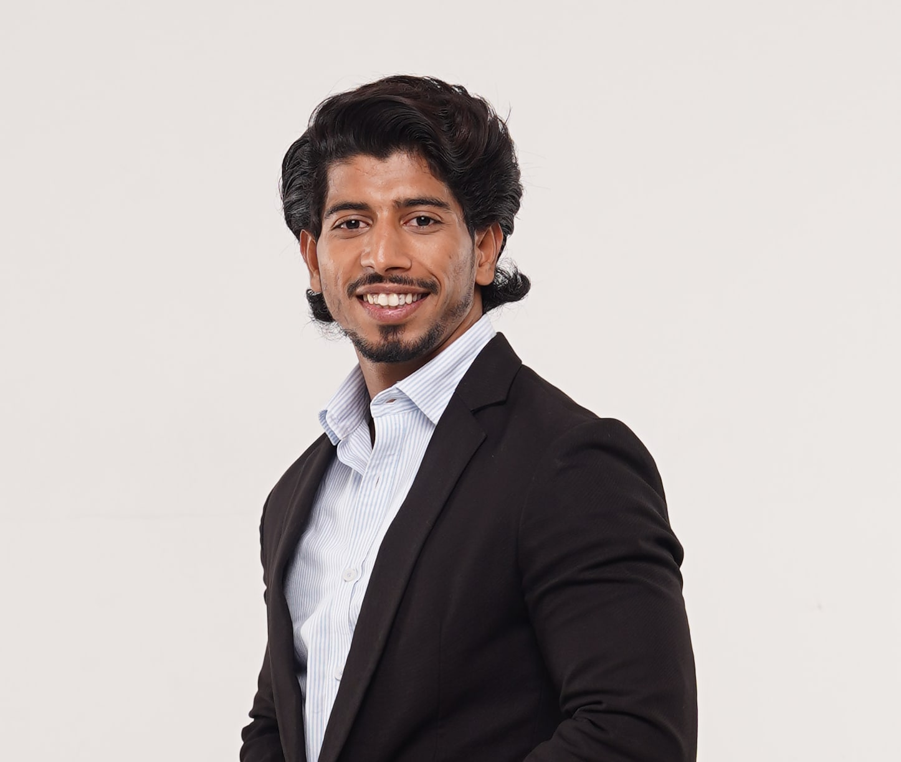

In the news.
Coverage of Azim Khan’s appointment and of FocusOn Interiors in national business and design media. Every link opens the original article.
Known for his entrepreneurial vision and people-first leadership style, he has consistently ensured that design intent translates into seamless execution on the ground. His focus on people, process, and performance is expected to deliver lasting value for clients, partners, and investors.
Realty+on the CEO appointmentRealty+, 27 Jan 2026 ↗Azim has been the driving force behind the company’s evolution into a PAN-India workplace and industrial interior solutions provider, bringing entrepreneurial vision, execution leadership, and a people-first culture that translates design intent into on-ground delivery excellence.
Architecture UpdateJan 2026Architecture Update ↗Articles & features.
FocusOn Interiors Names Azim Khan CEO to Drive National Expansion
“Azim, who has been with the company for over eight years, is credited with shaping FocusOn Interiors into a PAN-India solutions provider.”
FocusOn Interiors Appoints Azim Khan as CEO
“…bringing entrepreneurial vision, execution leadership, and a people-first culture that translates design intent into on-ground delivery excellence.”
FocusOn Interiors Strengthens Market Position with the acquisition of Riya Enterprises
Merger announcement: a unified “FocusOn Interiors” identity, Raja Khan as Chairman, and new offices planned in Pune, Hyderabad, Chennai and Kolkata.
FocusOn Interiors Strengthens Market Position with the acquisition of Riya Enterprises
“The new entity is a powerhouse that is capable of delivering projects at unmatched speed and efficiency.” — Raja Khan
Beyond Aesthetics: How India’s Fit-Out Industry Is Quietly Redesigning Work Itself
“Its strength lies in speed, precision and an almost obsessive attention to what the end user needs.”
How FocusOn Interiors is Bridging the Gap Between Design and Execution in India’s Commercial Interiors Market
Company profile: turnkey model, single-point accountability, the pivot to corporate work and the Covid-era Sanar Hospital delivery.
How FocusOn Interiors is Bridging the Gap Between Design and Execution
Founders, business model, tools (AutoCAD, 3ds Max, SketchUp, Enscape) and the “attitude over experience” hiring philosophy.
Republic Day 2026: Indian Leaders Driving the Vision of a Stronger Bharat
FocusOn profiled as a 100+ member organisation delivering design-and-build for Boeing, Compass Group and Fortune 500 workplace clients.
How Data, Design and Technology Are Reshaping India’s Workplaces
By Raja Khan, Chairman — BIM, VR walkthroughs, IoT and post-occupancy evaluation in Indian workplaces.
The Role of Technology in Interior Design: From VR to AI-Driven Space Planning
FocusOn’s early adoption of AR/VR validation and digital project tracking in turnkey office projects.
From Walls to Ceilings: How Colour Quietly Rewired the Modern Office
Guest article by Shanu Khan, Founder, FocusOn Interiors.
Smart Office Technology as a Driver of Creative Intelligence
Listed on FocusOn’s media page: BIM, behaviour-based planning and measured sustainability in workplace design.

For journalists and editors.
Azim is available for comment on workplace and industrial fit-outs, design-and-build delivery, procurement and the Indian commercial-interiors market.
- Name / title: Azim Khan, Chief Executive Officer, FocusOn Interiors (FocusOn Interior Decorators Pvt. Ltd.)
- Short bio: Joined FocusOn as a Backend Operator; Head of Operations; appointed CEO in January 2026 after eight-plus years with the company. Based in New Delhi.
- Photo: Download press photograph (JPG)
- Contact: azim.khan@focusoninterior.in · +91 96678 17267

Working on a story about workplaces in India?
Interview requests, quotes and background — write to Azim directly.